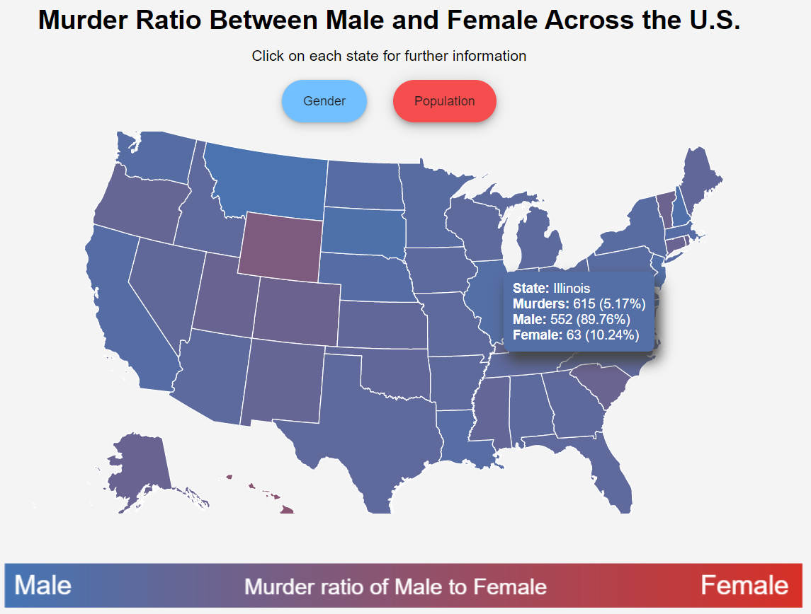
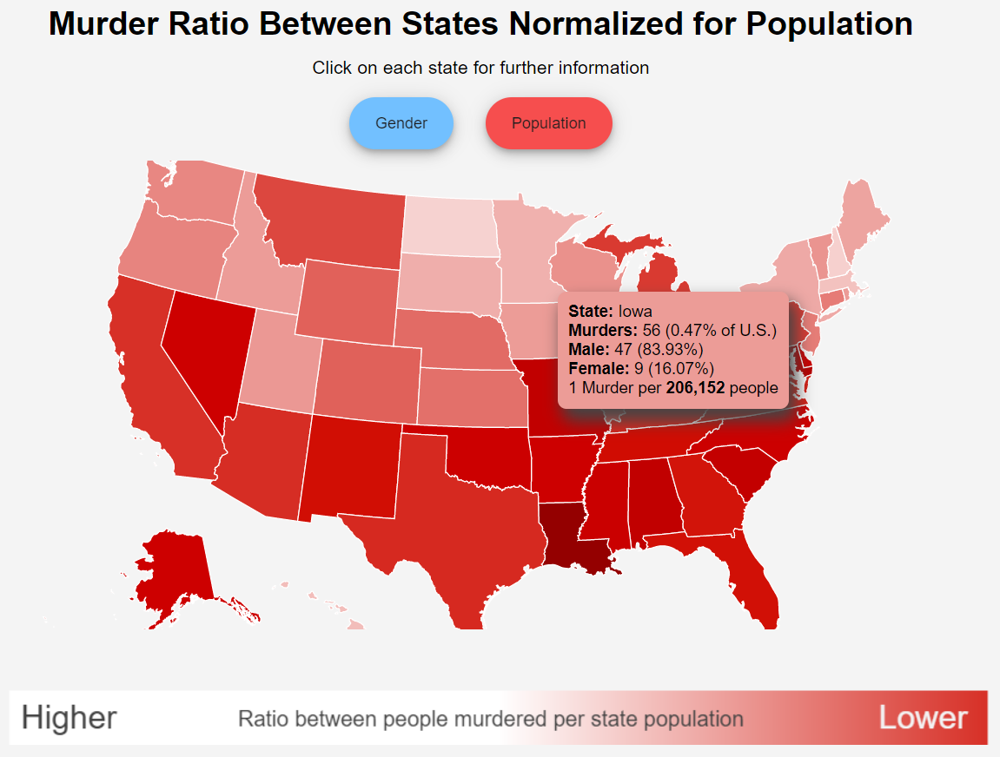

Analysis of the White Hat Visualization
This visualization attempts to correct many mistakes made in the previous black hat visualization. Here the text is readable, making the website pleasing to look at. When the user enters this website, they are not bombarded with information and this is due to the the minimalist approach that I have taken with this visualization. The information is only served when it's needed and asked by the user by hovering over the state. The first map shows data regarding the ratio of murder death between males and females. Intuitively, blue is associated with males and red is with the female. This design is further enhanced by creating the correct male-to-female color ratio under the map and putting labels in Arial font with white text to make it easier to read. With this particular visualization, users can hover over each of the states to get further details on the ratio of death between genders with actual numbers and percentage information. The tooltip also reflects the color gradient of the state to give another dimension of indirect information to the tooltip.

Following the minimalist design and showing information when requested, this visualization can show data at the state level as well. When the user clicks on the state, the state fills with murder data for that particular state only. This helps the users not be overwhelmed by lots of information. The murder data is presented as a red circle where the bigger the circle the more percentage of the state murders are done in that city. From the image on the left, you can see that when the user hovers over the bubble for Chicago, they are presented with information about murder data for that city. Users can further see what percentage of the murders are done with respect to the city and information about gender with percentage and actual numbers. I am choosing to put numbers alongside percentages as it gives a perspective when there is a high percentage number to see if there are lots of male murders or if it's an outlier when there are fewer murders recorded. I am choosing to color the tooltip box and the shadow to further give another indirect dimension of information about the percentage of murders in that city for that state. This color would subconsciously let the users know about the significance of that place when it's redder than the white color for the tooltip box.
Next, we will take a look at population information, which can be accessed by clicking one of the two buttons on the top of the visualization. Here the population information is just visualized to show where most murders happen, but it is normalized for how many people live in that state. This is to prevent misleading the user by showing the data where only where most people leave and where more murders happen. Furthermore, when you hover over each of the states, you can understand the information such as numbers about how it compares against other states. Here you can see what percentage of total murders happen in a state in comparison to the United States. You are also provided with the ratio of one murder to people living in the state. Another visual indirect information to give the ratio information is provided with the color of the tooltip which changes to a darker red as the ratio gets higher. The font color adapts to the tooltip to make the information always readable no matter what the background color of the tooltip is.
Once the user clicks on the state, they can explore the data about the murders at the state level. The color of the bubbles changes to blue to stand out against the red background which still represents the murder density of the state. The bigger the radius of the circle is the bluer the tooltip would become giving the user more indirect information about where the most murders happen within the state. This is further aided by giving a percentage of the murders that happen in the city.